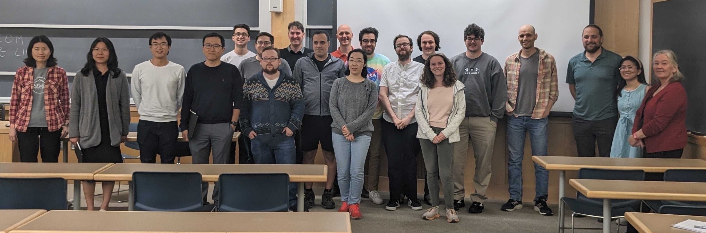

Current Seminar
The Applied and Computational Mathematics seminar (ACMS) at Dartmouth brings together researchers with common interests in the real-world applications of mathematical models and tools to tackle the resulting numerical simulation and computational challenges. Talks, enjoyed in a casual setting, include both outside speakers. The seminar includes talks broadly on mathematics, computational science, network science, stochastic processes, engineering, game theory, mathematical biology, statistics, physical science, complex systems, machine learning, data science, etc.; hence these talks will keep the breadth of the audience in mind.
The seminar is held weekly on Tuesdays from 2:30 – 3:30 PM in Kemeny Hall, Room 307.
The first three seminars on 1/9/24, 1/16/24, and 1/30/24 will instead be from 2:00 – 3:00 PM.
| Date | Speaker | Title |
|---|---|---|
| 1/9/24 | Mohammad Javad Latifi Jebelli (Dartmouth, Mathematics) | Kernel Smoothing Operators on Thick Open Domains |
| 1/16/24 | Wei Zhu (UMass Amherst) | Symmetry-Preserving Machine Learning: Theory and Applications |
| 1/30/24 | Mario Bencomo (California State U, Fresno) | Topics in Differential Equations, Inverse Problems, and Optimal Control |
| 2/6/24 | Jeremy Manning (Dartmouth, PBS) | TBA |
| 2/13/24 | Maryclare Griffin (UMass Amherst) | TBA |
| 2/20/24 | TBA (TBA) | TBA |
| 2/27/24 | Casey Dowdle (Dartmouth, Mathematics) | TBA |
| 3/5/24 | Chris Vales (UNH) | Energy conservative quadrature based hyperreduction of Lagrangian hydrodynamics problems |
| 3/12/24 | Rachael Alfant (Rice) | TBA |
This seminar is organized by Linh Huynh (linh.n.huynh@dartmouth.edu) and Jonathan Lindbloom (jonathan.t.lindbloom.gr@dartmouth.edu).
